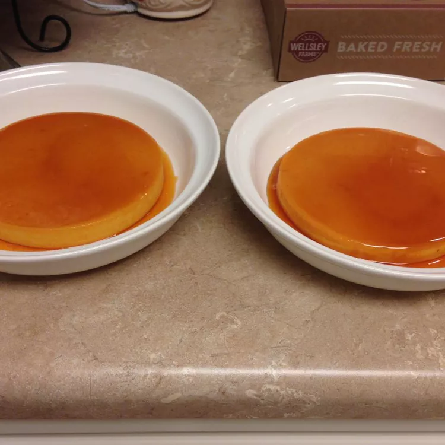

Odin Recipes
HOME
Brazilian Pudim

Ingredients
- 1 cup white sugar
- 4 eggs, separated
- 1 (14 ounce) can sweetened condensed milk
- ¾ cup milk, plus
- 2 tablespoons milk
Directions
- Preheat an oven to 350 degrees F (175 degrees C).
- Melt the sugar in a heavy saucepan over low heat, stirring constantly. Once the sugar becomes a golden brown syrup after about 10 minutes, pour it
immediately into around baking dish, swirling so that the syrup coats all sides of the dish. Set aside to cool
- Place the egg yolks into a blender and blend on medium for 5 minutes, then add condensed milk, 3/4 cup plus 2 tablespoons milk, and egg
whites. Continue to blend until all ingredients are combined. Pour egg mixture into the baking dish and cover with aluminum foil. Line a roasting pan with a damp kitchen towel.
Place baking dish on towel, inside roasting pan, and place roasting pan on oven rack. Fill roasting pan with boiling water to reach halfway up the sides of the baking
dish.
- Bake in the preheated oven until a knife inserted 1 inch from the edge comes out clean, 45 to 50 minutes. The center of the flan
will still be soft. Allow flan to cool before unmolding onto a plate. Refrigerate before serving.